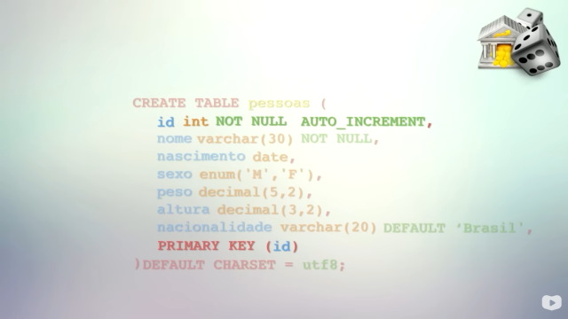

Apagando banco de dados:
drop database cadastro;
Criando banco de dados:
create database cadastro;
Constraint:
No contexto de banco de dados, uma constraint (ou restrição) é uma regra de integridade que o próprio banco impõe aos dados de uma tabela, para garantir que as informações armazenadas sejam corretas, coerentes e consistentes.
create database cadastro
default character set utf8
default collate utf8_general_ci;
use cadastro;
create table pessoas(
nome varchar(30) not null,
nascimento date,
sexo enum ('M','F'),
peso decimal(5,2),
altura decimal(3,2),
nacionalidade varchar(20) default 'Brasil'
)default chaset = utf8
Acima usamos as constraint: not null(não pode ser nulo) ; date(data) ; enum('M','F') (escolher entre M e F) ; decimal(5,2) (de 5 casas, duas serão após a virgula) ; e varchar(20) default 'Brasil' (váriaveis de caracteres normalizado para 'Brasil').
Para evitar repetição de cadastro:

create database cadastro
default character set utf8
default collate utf8_general_ci;
use cadastro;
create table pessoas(
id int not null auto_increment,
nome varchar(30) not null,
nascimento date,
sexo enum ('M','F'),
peso decimal(5,2),
altura decimal(3,2),
nacionalidade varchar(20) default 'Brasil',
primary key(id)
)default chaset = utf8